| Asignatura: | Desarrollo de Aplicaciones Móviles Nativas |
| Práctica: | Práctica 8: El campo de texto EditText |
| Alumno: | Angel Frausto Robles |
| Grupo: | 7CM4 |
| Fecha: | 18 de septiembre de 2026 |
Esta práctica recorre a fondo el componente EditText, la clase de
Android encargada de capturar y editar texto del usuario (hereda de TextView,
que a su vez es una View). El material del profesor propone 26
ejercicios cortos: en cada uno se modifica únicamente la etiqueta <EditText>
del layout (y en algunos casos el código de MainActivity.java) para
mostrar un comportamiento distinto: tipos de teclado, límites de caracteres, manejo del foco,
del cursor, de eventos del teclado virtual y de apariencia.
Objetivos:
EditText
(inputType, hint,
maxLength, singleLine,
ems, digits, entre otros).TextWatcher,
OnEditorActionListener, OnFocusChangeListener).
Proyecto Empty Views Activity en Java. MainActivity
extiende android.app.Activity directamente (no
AppCompatActivity), salvo en los ejercicios 20 y 26, donde el propio
material del profesor requiere clases de AndroidX (ContextCompat,
DrawableCompat y AppCompatActivity). Cada
ejercicio parte del mismo proyecto: solo cambia activity_main.xml y, en
algunos casos, MainActivity.java. El código exacto de cada variante
está en la carpeta variantes/ del repositorio.
Un EditText centrado dentro de un RelativeLayout, con un hint como único atributo visible.
Un botón "Guardar" invoca getText().toString() sobre el campo y muestra el valor capturado en un Toast.
android:inputType="phone" cambia el teclado virtual a uno numérico orientado a teléfonos.
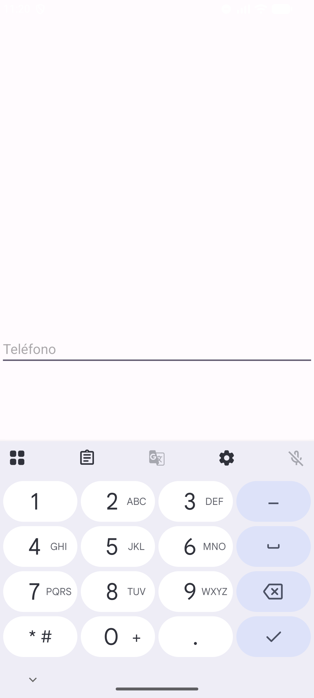
android:maxLength="9" impide escribir más de 9 caracteres en el campo "Apodo".
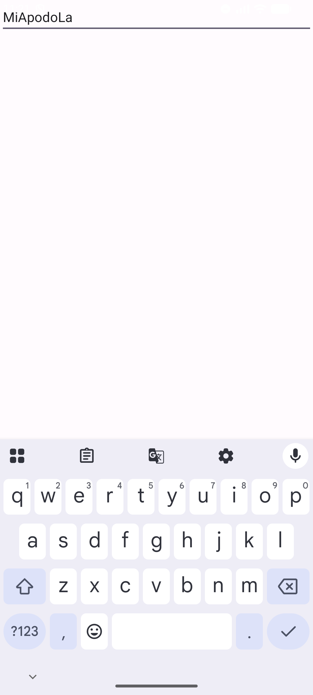
android:singleLine="true" hace que la tecla Intro del teclado cierre la edición en vez de saltar de línea.
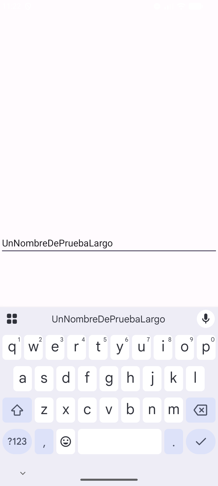
android:ems="6" fija el ancho del campo a 6 veces el tamaño de un carácter, en vez de match_parent.
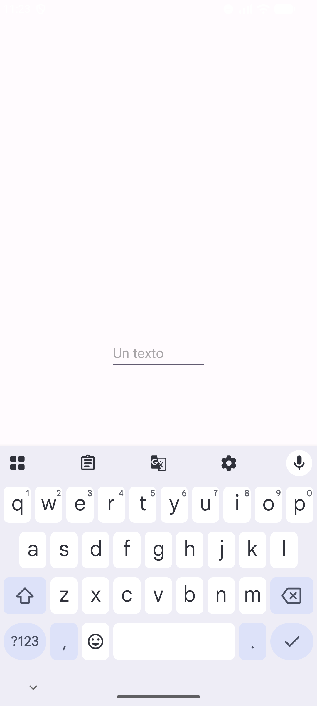
android:digits="1234567890 " filtra qué caracteres puede aceptar el campo, combinado con maxLength="15" y ems="9".
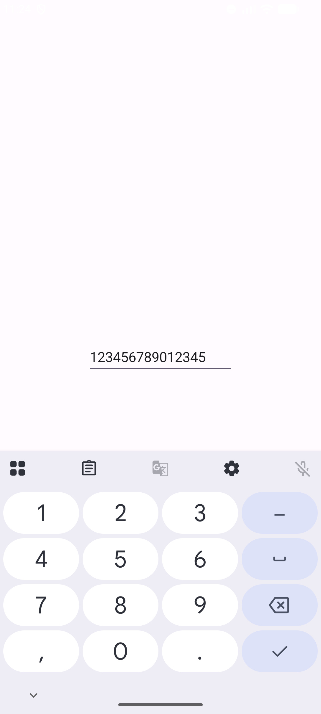
Un botón usa InputMethodManager.hideSoftInputFromWindow() para cerrar el teclado virtual manualmente.
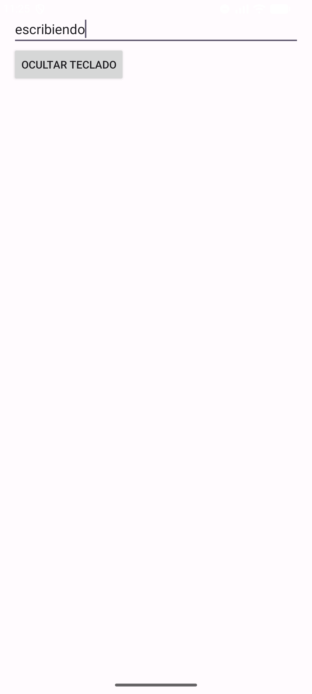
android:enabled="false" deshabilita por completo la edición del campo.
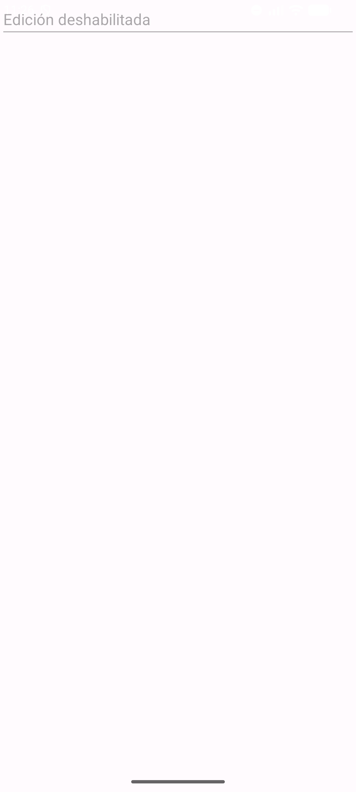
setFocusable(false) (desde Java o el atributo android:focusable) impide que el campo reciba el foco y el cursor.
Con dos campos en pantalla, requestFocus() mueve el foco al segundo campo apenas arranca la actividad.
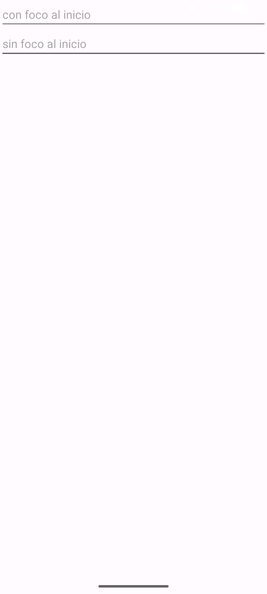
android:nextFocusRight/nextFocusLeft permiten navegar entre dos campos con las flechas del teclado.
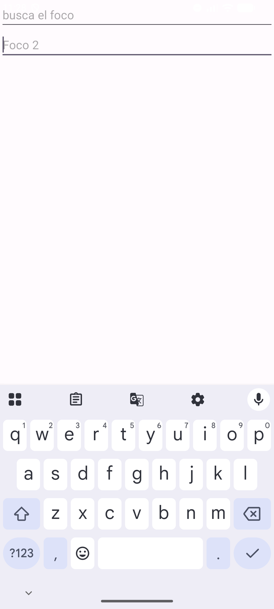
setSelection(3) coloca el cursor en el índice 3 del texto al arrancar la actividad.
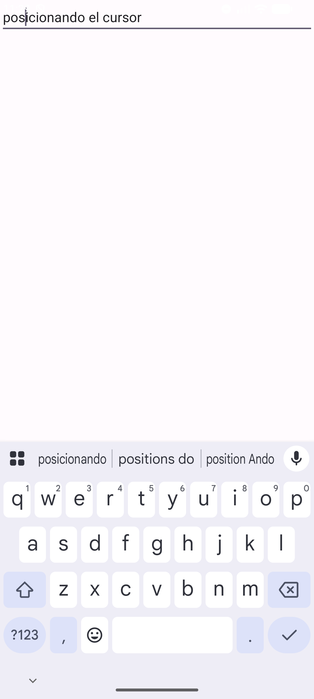
getSelectionEnd() obtiene la posición actual del cursor y la registra con Log.d() (visible en Logcat). Como este ejercicio no cambia nada visible en pantalla, la evidencia real es la línea de Logcat capturada junto con la pantalla.
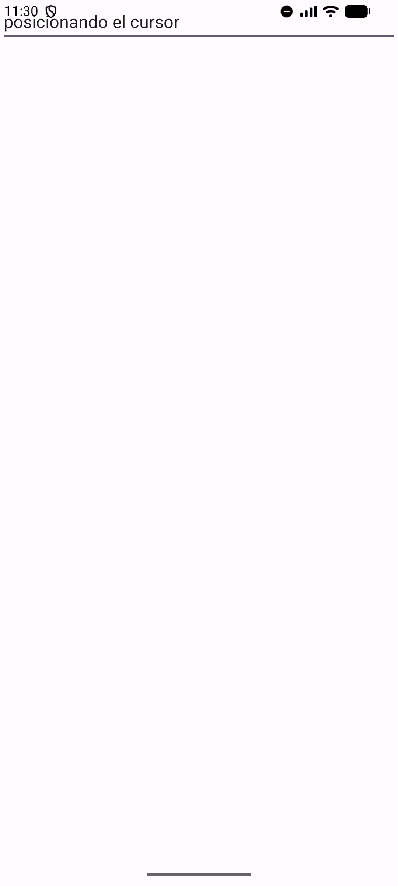
09-18 23:30:04.949 7491 7491 D Obteniendo cursor...: 0
El campo no tiene foco al arrancar la actividad (no se llamó requestFocus() ni setSelection()), así que getSelectionEnd() reporta la posición 0 por defecto.
Un bucle recorre el texto buscando el primer espacio y usa setSelection(ini, fin) para seleccionar solo la primera palabra.
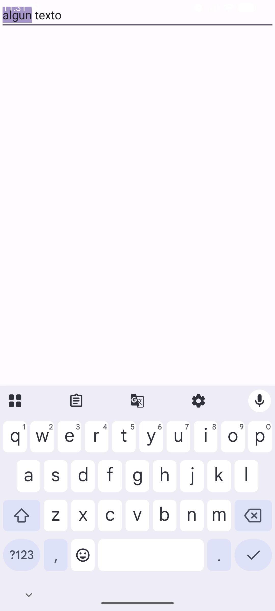
selectAll() selecciona todo el contenido del campo de una sola vez.
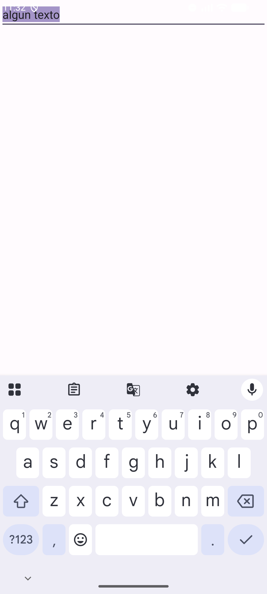
android:imeOptions="actionSend" cambia el botón Intro del teclado por un ícono de enviar, con la etiqueta "Enviar" (imeActionLabel).
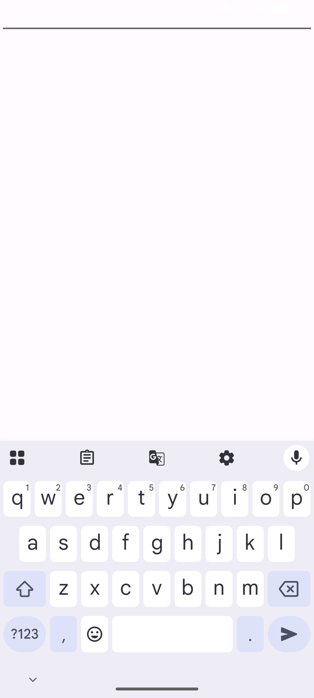
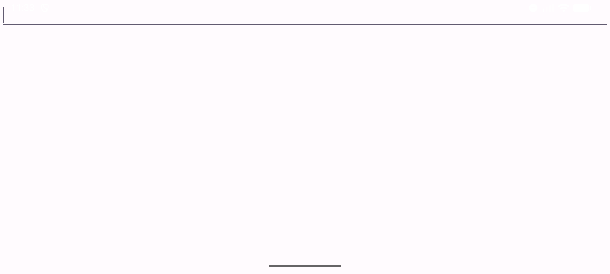
Al rotar el dispositivo a horizontal, el campo ocupa todo el ancho disponible, baja de altura, y el teclado virtual se cierra. Esto pasa porque, al cambiar de orientación, Android destruye y vuelve a crear la actividad (no se declaró android:configChanges para conservar el estado de la vista), así que el EditText pierde el foco y el teclado permanece oculto hasta que el usuario vuelve a tocar el campo.
addTextChangedListener() con afterTextChanged() cuenta los caracteres del campo en tiempo real y los muestra en un TextView.
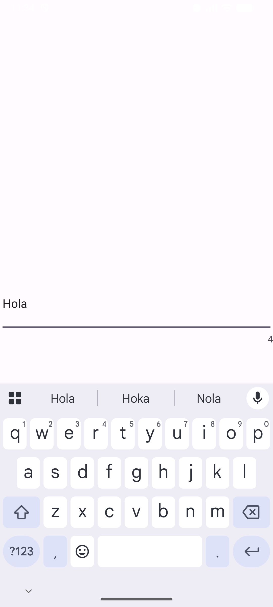
OnEditorActionListener detecta IME_ACTION_SEARCH y muestra un Toast con el texto buscado, ocultando el teclado después.
setOnFocusChangeListener() cambia el tinte de un ícono (DrawableCompat.setTint) cuando el campo numérico recibe el foco.
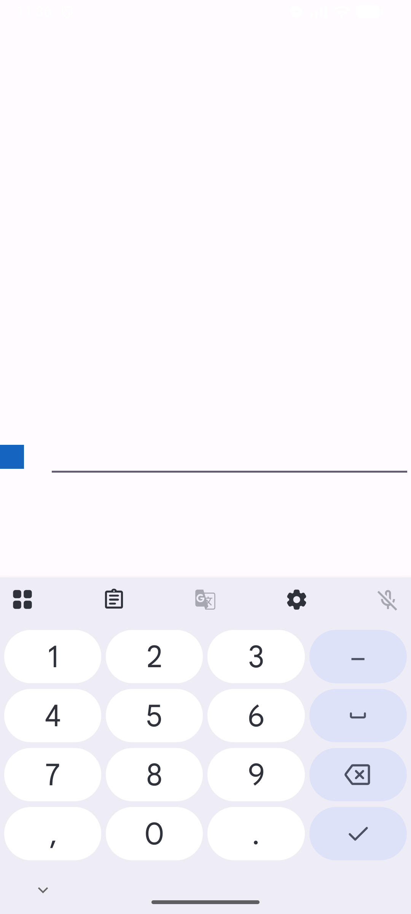
android:textColorHint cambia el color del texto auxiliar (hint), referenciando un color definido en colors.xml.
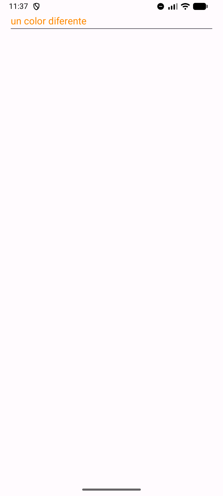
android:textColorHighlight cambia el color de fondo de la selección de texto.
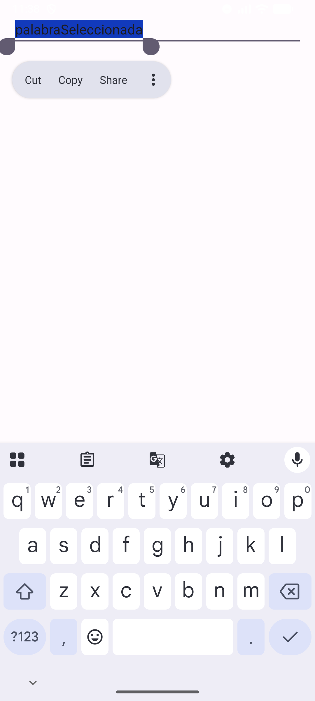
android:gravity="center" centra el texto horizontal y verticalmente dentro del campo.
Un estilo miEstilo que hereda de Theme.AppCompat.Light y redefine colorControlNormal/colorControlActivated cambia el color del borde inferior del campo.
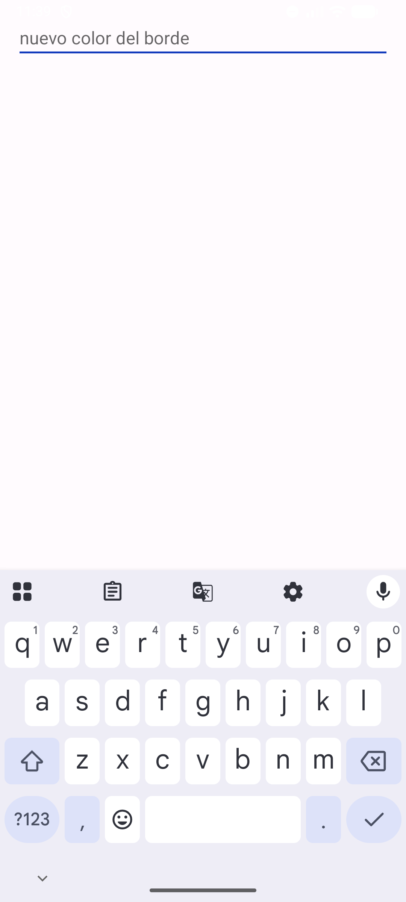
android:textSize="34sp" agranda el texto del campo usando pixeles escalables (sp).
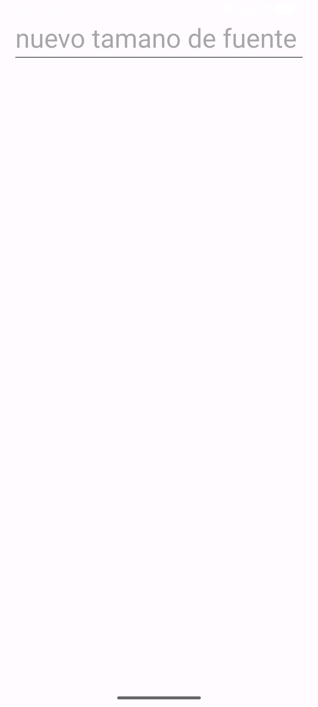
Un AutoCompleteTextView con un ArrayAdapter sugiere palabras de una lista fija conforme el usuario escribe.
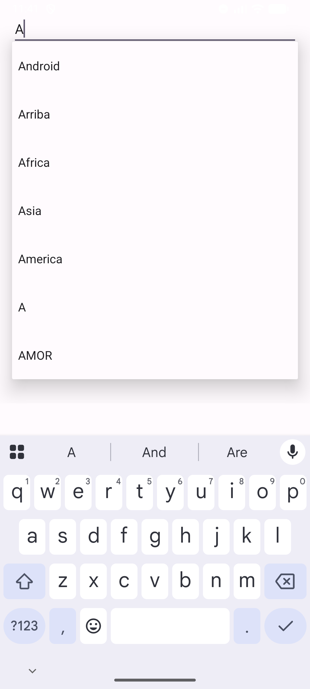
[Conclusiones personales del alumno sobre lo aprendido con EditText, el manejo del foco/cursor y los eventos del teclado virtual.]
developer.android.com/reference/android/widget/EditTextdeveloper.android.com/develop/ui/views/touch-and-input/keyboard-input